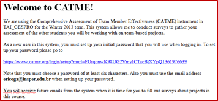

Aplicar uma pesquisa de avaliação
Sumário
Preparar listagem de alunos
Durante a criação da pesquisa o Catme solicitará a lista de alunos que participarão da atividade.
Caso os alunos pertençam todos à mesma turma é possível gerar a listagem a partir do Blackboard:
Copie a lista completa de alunos do Blackboard para o Bloco de Notas e, na sequência, copie os dados do Bloco de Notas para uma planilha Excel.
Formate os dados no Excel respeitando a seguinte ordem de colunas: First; Last; Email; ID; Team.
O cabeçalho deve sempre seguir esse padrão de nomenclatura.
Existem algumas restrições na geração da listagem de alunos:
First
- Primeiro nome do aluno
- Máximo de 20 caracteres
Last
- Segundo nome + sobrenome do aluno
- Máximo de 20 caracteres
- Endereço de e-mail Insper do aluno
- Máximo de 40 caracteres
ID
- Nome de usuário do aluno (mesmo usado para acessar os sistemas do Insper)
- Máximo de 15 caracteres
Team
- Identificação da equipe
- Máximo de 30 caracteres
Atenção!
O Catme aceita letras, números, hifens e espaços nos campos. No entanto, caracteres especiais: Ç @ ! ? # $ % " & * etc. e acentuação não são aceitos e devem ser substituídos manualmente antes da importação para o sistema.
Uma vez formatados os dados no Excel o arquivo deve ser salvo em formato Texto (separado por tabulações).
Criar classe
Antes de criar uma pesquisa é preciso criar uma classe no Catme.
Preencha os dados da classe informando “Insper” no campo Institution.
Em Type, selecione o contexto em que a pesquisa será aplicada. Para as aulas tradicionais, escolha "Lecture".
Defina se os alunos deverão passar por uma "simulação" de avaliação de pares para calibração das respostas antes da pesquisa "real".
Ao selecionar esta opção, os alunos avaliam alunos fictícios com base em descrições fictícias de comportamentos. Ao final é exibida uma comparação entre a avaliação realizada pelo aluno versus a avaliação correta determinada pelo sistema.
Determine se as mensagens de resultados serão exibidas aos alunos (sugerimos marcar esta opção).
Criar pesquisa de avaliação
Com a classe criada, é preciso adicionar a atividade (pesquisa) que será respondida pelos alunos.
Escolha CATME BARS, uma vez que as equipes serão informadas ao Catme na listagem de alunos.
Preencha os dados da atividade.
Escolha os critérios de avaliação e, se necessário, edite o texto inicial da pesquisa. Sugerimos que os critérios propostos sejam mantidos.
Faça a importação da lista de alunos configurada previamente.
Após a importação é possível adicionar novos alunos em Append. O botão Replace descarta a lista de alunos carregada previamente e substitui pela nova lista selecionada.
Escolha quem, além de você, terá acesso aos dados da pesquisa (Ex.: DEA/NID, coordenadores etc.). Para isso, é necessário que a pessoa possua uma conta no Catme.
Na Graduação, sugerimos a inclusão das colaboradoras Elúbian Sanchez (elubianms@insper.edu.br) e Maritza Elias (maritzase@insper.edu.br) do DEA/TAI para acompanhamento e utilização dos dados para Assessment.
Ao delegar o acesso a outras pessoas, elas podem ver os resultados das pesquisas e enviar avisos de lembrete para os alunos. No entanto, é possível dar acessos adicionais, para:
- Alterar as datas de início e término do período de pesquisa.
- Importar uma nova lista de alunos para a pesquisa.
- Liberar os dados da pesquisa para os alunos.
Atenção!
Assim que todas as etapas forem concluídas os alunos receberão por e-mail um convite para participar da atividade.

Editar informações da pesquisa
Na página inicial, clique no nome da classe ou da pesquisa que pretende editar.
Class:
- Alterar informações configuradas durante a criação
- Criar novas pesquisas: Add Activity
- Excluir classe: Delete Class
Activity:
- Alterar nome (Activity Name) e texto introdutório (Edit Activity Intro)
- Trocar datas de início e fim de aplicação da pesquisa (Start Date e End Date)
- Escolher categorias a serem avaliadas (Categories)
- Delegar acesso à pesquisa para outros usuários (Delegate Faculty)
- Simular visualização que os alunos fazem da pesquisa (Preview instrument as student)
- Editar lista de alunos:
- Adicionar alunos novos (Add Individual)
- Editar lista existente (Edit Students)
- Substituir lista de alunos (Replace)
- Excluir pesquisa (Delete Activity)
Pesquisas que por algum motivo requerem atenção são agrupadas em uma primeira tabela. As pendências de cada pesquisa são indicadas ao lado, em vermelho. Clicando sobre este texto é possível resolver o problema.
A tabela inferior exibe a lista completa de pesquisas já criadas, em aplicação ou não.